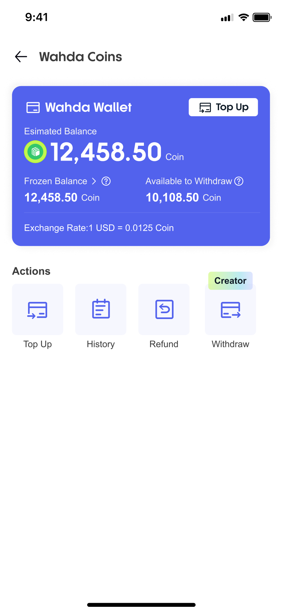
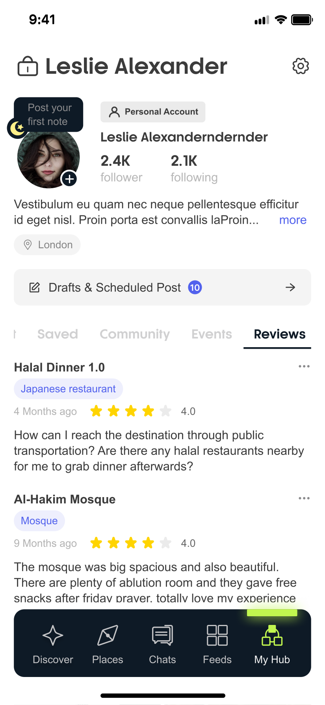
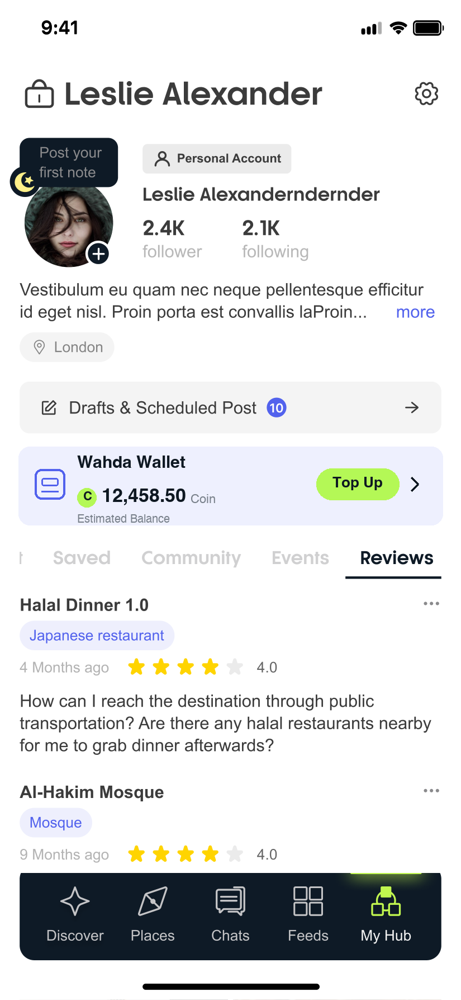

This draft inserts a Wallet card between Drafts & Scheduled Post and the content Tabs: balance at a glance + a Top Up quick-action button. Everything else is the original screenshot (only the scrollable list below is cropped by ~150px due to the inserted card pushing content down — an invisible loss within the scroll area).
The new card follows the wallet page's visual system: indigo primary color (#5262ED) icon language + brand-green Top Up action, with the balance figure and copy fully consistent (Estimated Balance / Coin):



| # | Change | Notes |
|---|---|---|
| 1 | New Wahda Wallet entry card | Placed below Drafts & Scheduled Post and above the content Tabs. Tapping anywhere on the card opens My Wallet (Page 58), with an entry arrow › on the card's right edge. |
| 2 | Balance at a glance | The card shows Estimated Balance 12,458.50 Coin directly (same figure and convention as the wallet page), so the balance is visible without entering the wallet page. |
| 3 | Top Up quick-action button | Brand-green pill button, one tap straight to the top-up flow (Page 57 Top Up / Actions); green = Wahda brand action color. |
| 4 | Visual language follows the wallet page | Light indigo card background + indigo wallet icon (colors taken from the Figma wallet page's #5262ED system); the green Coin dot and Balance text hierarchy match the wallet page. |